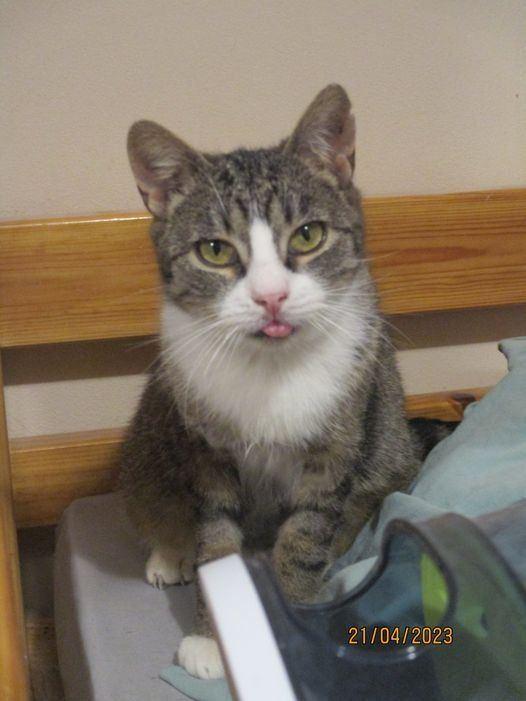
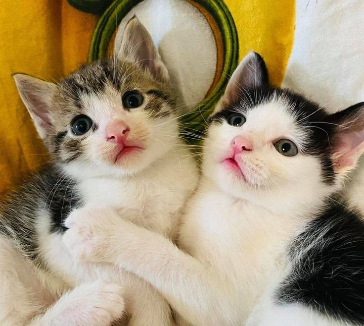
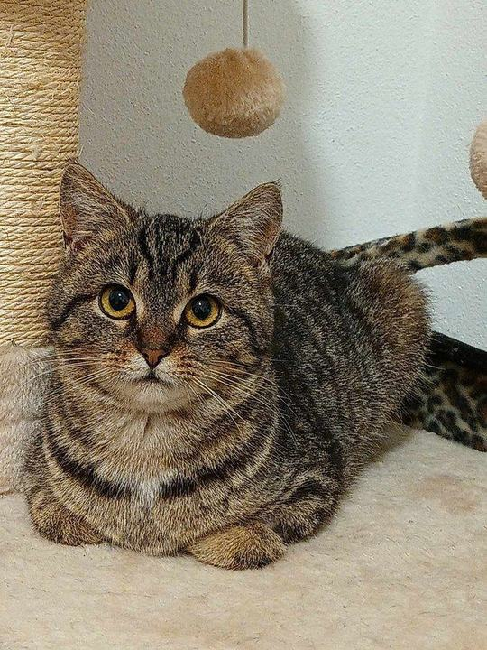
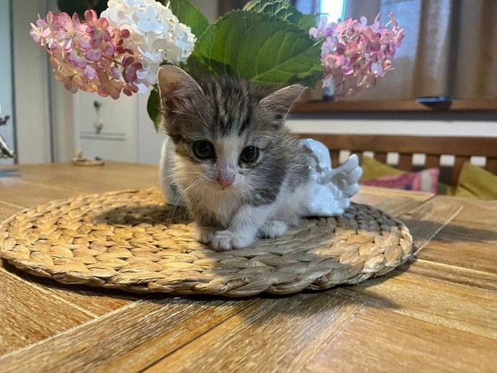
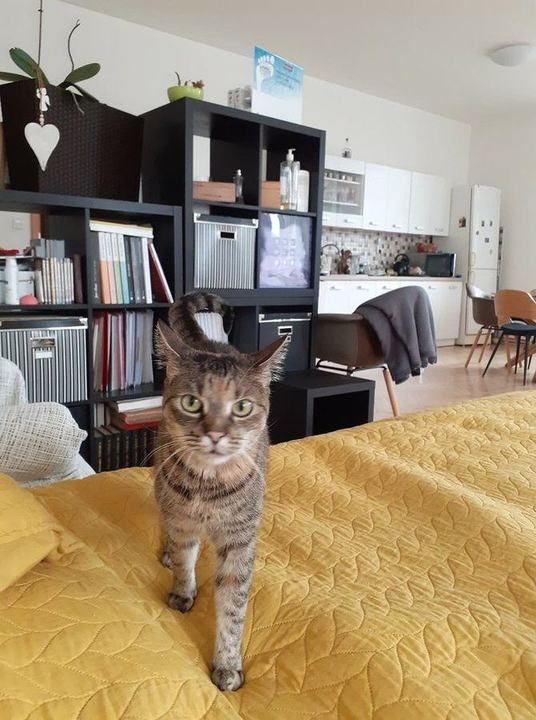
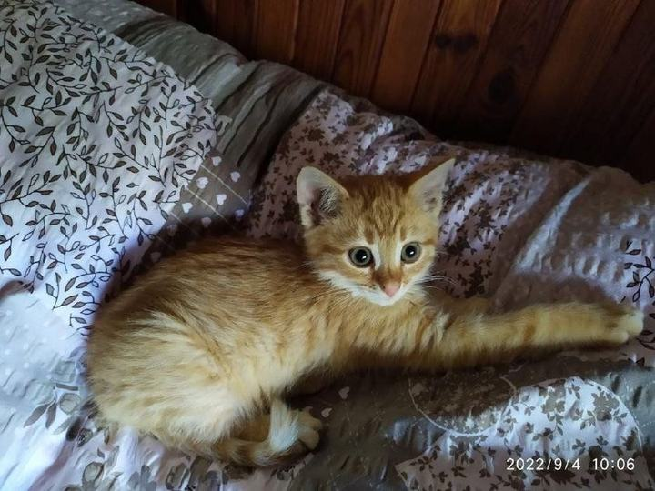
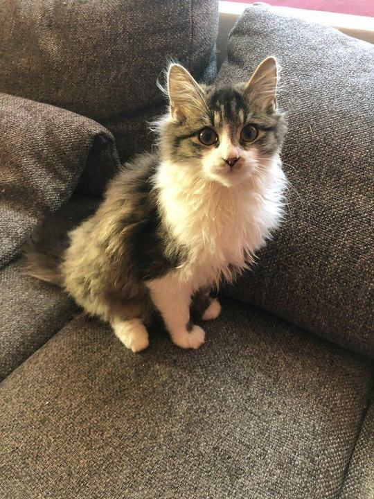
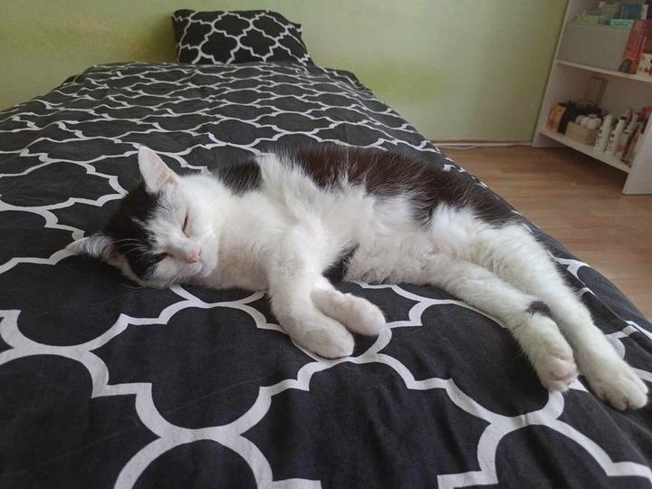
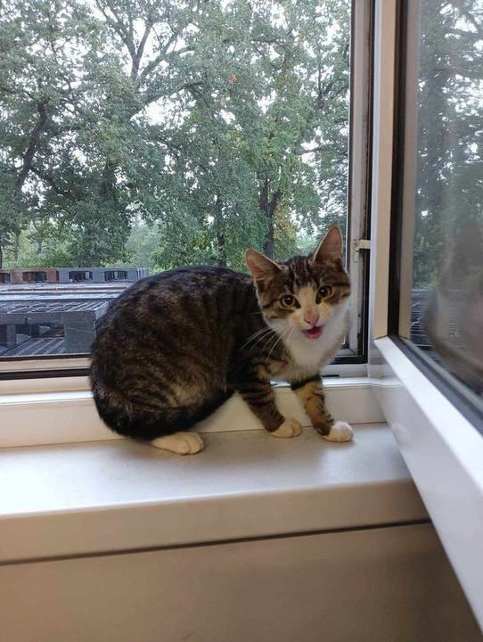

Depozitum chlup-nechlup · Strakonice
Hledáme ten pravý domov pro opuštěné kočky.
Odchytáváme, léčíme a kastrujeme toulavé kočky ze Strakonic a okolí. Pak jim hledáme lidi, kteří je budou mít rádi napořád.
- 396 koček už našlo domov
- Adopce bez poplatku
- Transparentní účet

Celesta hledá domov co nejdřív.
Trpělivá, statečná, hravá a čistotná. Od kotěte si toho hodně vytrpěla, má zdeformovanou nožičku a po vytržení zubů se jí ještě hojí dásně. Přesto baští a užívá si život. Hledá bezpečný domov v bytě nebo v domku se zabezpečenou zahradou.
U nás od února 2023
Hledají domov
Možná na vás čeká právě teď.
Seznam se načítá živě z portálu Pesweb.cz. Zaujala vás některá kočka? Ozvěte se Ditě a domluvíte se na seznámení.
Tyhle kočky jsou u nás nejdéle, některé i několik let. Často jsou to dospělé, plaché nebo starší kočky, které potřebují trpělivého člověka. Odmění se mu ale celou duší.
Nejnovější přírůstky, které hledají domov. Na jaře a v létě jsou to hlavně koťata.
Kdo jsme
Jsme malé domácí depozitum, ne velký útulek. Město Strakonice pokryje zhruba třetinu nákladů, zbytek krmiva, kastrací a léčení platíte vy.
Čísla z Pesweb.cz a z transparentního účtu, říjen 2026.
Cesta kočky
Z ulice až na gauč. Krok za krokem.
-
Odchyt
Sbíráme celé vrhy, dohledáváme a po nocích naháníme kočky, které se ocitly na ulici. Často čekají u nálezců nebo tam, kam je chodí krmit hodní lidé.
-
Karanténa a léčba
Každá kočka projde karanténou. Kočky z různých lokalit ubytováváme odděleně a přísně dbáme na hygienu, aby se nemoci nepřenášely.
-
Kastrace
Bez kastrace se koloběh nových vrhů nezastaví. Dospělé kočky od nás odcházejí kastrované, u koťat je kastrace v dospělosti podmínkou adopce.
-
Dočasná péče
Zdravé kočky se stěhují do dočasných domovů. Tam se mazlí, zvykají si na lidi a my je díky tomu líp poznáme.
-
Nový domov
Hledáme pro každou kočku spřízněnou duši: stabilní a bezpečný domov na adopční smlouvu. A uvolněné místo hned obsadí další kočka z ulice.
Pomáhejte s námi
Pomoct se dá i bez kočky doma.
Každá z těchto možností pomáhá kočkám, které zrovna čekají venku.
Adoptujte
Dejte kočce stabilní a bezpečný domov. Adopce je bez poplatku a pomůžeme vám vybrat kočku, která sedne k vaší domácnosti.
Jak adopce probíháDočasná péče
Mějte kočku doma bez závazku na celý život. Krmení, stelivo i veterinu hradí depozitum, Dita je vám na telefonu.
Jak funguje dočasná péčePravidelný příspěvek
Pravidelný příspěvek trvalým příkazem nám pomáhá nejvíc. I 200 Kč měsíčně je znát. Účet je transparentní.
Nastavit trvalý příkazSdílejte
Sdílejte kočičky, pověste plakát u veterináře nebo na obecní nástěnce. Čím víc lidí kočku uvidí, tím dřív najde domov.
Plakát a sdíleníFinanční dar
Peníze jdou na kočky, ne na mzdy. A je to vidět.
Jdou na krmivo, veterinu a stelivo. Účet je transparentní, každý pohyb si můžete zkontrolovat. Účtenky z nákupů sdílíme na Facebooku.
Vyberte částku, naskenujte QR kód v aplikaci své banky a je hotovo.
500 Kč = krmení pro celé depozitum na půl dne. Za rok kočky spořádají krmivo za 380 000 Kč.
Platíte z mobilu? Uložte si QR kód a v aplikaci banky ho nahrajte z galerie (QR platba → z obrázku). Nebo zkopírujte číslo účtu.

Trvalý příkaz
Nejvíc pomůže pravidelný příspěvek.
Díky trvalému příkazu víme, s čím můžeme počítat, a můžeme vzít další kočku z ulice. Už přes 20 lidí nám takhle posílá peníze každý měsíc, většinou 100 až 500 Kč. Kdyby se jich sešlo sto po 300 Kč, pokryli by skoro všechno krmivo na měsíc.
Trvalý příkaz si nastavíte za dvě minuty a kdykoli ho můžete zrušit.
- V internetovém bankovnictví zvolte Trvalý příkaz.
- Číslo účtu: 6077760777/2010
- Do zprávy pro příjemce napište své jméno, ať víme, komu poděkovat.
- Zvolte částku a frekvenci měsíčně. Děkujeme!
Domov našli
396 koček už má svého člověka.
Za každým číslem je kočka, která začínala ve slepičárně, ve sklepě nebo u silnice. Dnes spí na gauči. Všem novým páníčkům děkujeme.
Další šťastné konce







Našli jste kočku?
Nejdřív volejte obec. Ze zákona.
Nález zvířete, které zjevně mělo majitele, musíte ohlásit obci (§ 1058 občanského zákoníku) a obec se o ně musí postarat, o kočku stejně jako o psa. Každá nenahlášená kočka znamená, že obec „problém s kočkami nemá“.
Městská policie
Kde ji mají, volejte 156. Vždy na místě nálezu, ne do jiného města.
Starosta nebo odbor životního prostředí
Kde městská policie není, najděte si číslo na starostu obce. Klidně večer nebo v neděli.
Teprve potom útulek
Když obec odmítne, ozvěte se nám. Poradíme a pomůžeme s jednáním s obcí.
Srdce depozita
Za vším stojí Dita.
Depozitum vzniklo jako malé rodinné zázemí pro nalezené kočky z okolí. Založila ho a vede Dita Uhriková. Už patnáct let se stará o nemocné a zraněné kočky, protože Strakonice pořád nemají kočičí útulek.
Pokud se rozhodnete kočku adoptovat nebo jste nějakou našli, budete jednat právě s ní.